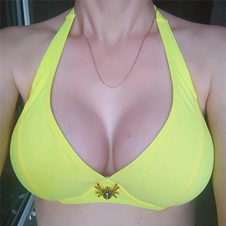
Здравствуйте, Максим Анварович, хочу сказать Вам огромное спасибо, за ваш профессионализм, талант, доброту и компетентность. Меня очень радует результат моей операции, который превзошёл все мои ожидания! От мужа Вам низкий поклон!!!! Благодарю Вас ещё раз!!! Операция была сделана 06.03.2018г Мотива Эргономикс 510 мл сверх высокий профиль.
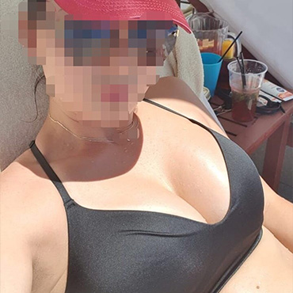
Максим Анварович, ещё раз добрый день.
Спасибо, что приняли меня без очереди. И спасибо Вам за Вашу работу. Не могу нарадоваться.
А купаюсь я в таком топе.
Установлены импланты мотива, модели эргономикс, объём 450 мл.
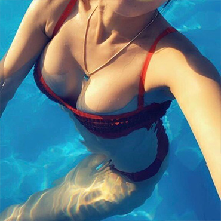
Здравствуйте, мой любимый доктор!!! Не могу выразить всю свою благодарность за меня красивую! Приехала из отпуска на днях, набрала себе купальников таких, каких я захотела, все сидит просто идеально!
Как я жила раньше без тить, я не знаю.
Как же хорошо, что я решилась, не смотря на все свои страхи и отговоры со стороны мужа. Он теперь не отлипает от них.
Если помните, левая у меня была выше, вы мне ее опускали, сейчас все тьфу-тьфу ровненько, идеальненько.⠀
Установлены импланты мотива, модели эргономикс, объём 375 мл. Была повторная коррекция.
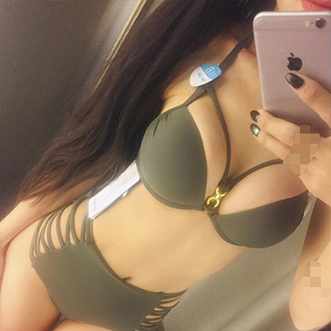
Первый раз в жизни я покупала купальник с таким наслаждением. Дети настолько всё высосали, что раньше вообще было стыдно заходить и мерить что-то! Установлены импланты мотива, модели эргономикс, объём 375 мл. Прошло около 3 месяцев после операции.
Здравствуйте, Максим Анварович. Ещё раз хочу сказать огромное спасибо. Ношу их второй год, а восторг как в первый день. Спасибо большое!
На фото круглые модели имплантов, мотива, объём 500 мл.
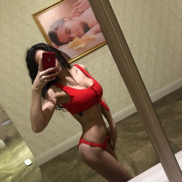
⠀
Благодарю моих пациенток за фото!⠀
Среди них есть и кормившие мамы. Но вместе с этим и молодые женщины, которым важно по-прежнему оставаться привлекательными, уверенными в себе, и счастливыми! Эти желания и привели их ко мне.⠀
Модель и объём имплантов подбираются индивидуально, на консультации, с учетом ВАШИХ анатомических особенностей, и пожеланий.
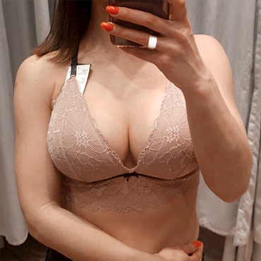
Максим Анварович,здравствуйте! Хочу выразить вам огромную благодарность за проделанную вами ювелирную работу, за глаз алмаз, который сразу видит, какой размер подойдет той или иной девушке. Я как и все, боялась цифр 450 мл, боже это же так много, но у вас есть какая-то магическая способность внушения. Я доверилась вам и ни разу не пожалела. Все очень гармонично. О такой груди я и мечтать не могла, у меня такой никогда и не было. В предвкушении купального сезона! Это будет просто бомба!
Долой большой пушап, да здравствует красивое кружевное белье без наполнителя. В общем, все мучения на первой неделе после операции, связанные с болевыми ощущениями, это мелочи, которые быстро забудутся, зато в итоге вы получите шикарный бюст и как бонус еще более счастливого мужа.
Если есть показания для проведения мамопластики, то девчонки, бегите сломя голову на операцию, это того стоит!
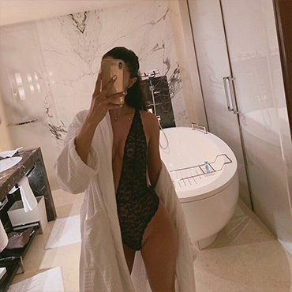
Никогда не хотела себе большую грудь, довольна своими маленькими и естественными грудями))). Очень переживала, хотела маленькую и естественную, другие врачи предлагали вообще 215 - боялась, что совсем маленькая будет.
Но Максим Анварович прям попал в точку! Очень рада результату, что доверилась врачу, хорошо что не меньше и не больше поставили, я счастлива.
Спасибо МА за такую красоту и счастье, правда очень довольна, теперь могу носить декольте и гордиться своими грудями!
Прошло 3 месяца после операции, объём 315 мл.
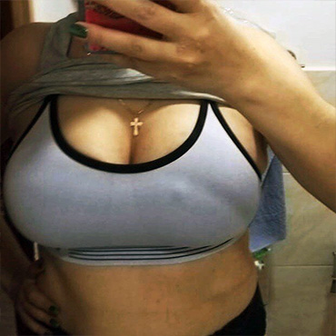
Здравствуйте, Максим Анварович, как ваши дела? Хотела поделиться с вами видео и фото. Вы сделали меня самой счастливой на свете словами не описать, как я благодарна вам. Вы мой герой, Вы самый лучший, я желаю вам от всего сердца, чтобы все ваши желания и мечты исполнились. Также как вы, волшебник, исполнили мою мечту. Обещаю носить вашу работу с гордостью, как знамя, очень горжусь знакомством с вами побольше вам хороших клиенток, адекватных.
Каждый день Вас вспоминаю добрым словом. Спасибо большое за ваш труд, здоровья вам и процветания!!!!!
Прошёл месяц после операции, грудь уже достаточно мягкая.
Всё ровненькое, всё красивенькое, всё стоит!
Я на себя не налюбуюсь прям.
Установлены импланты мотива, круглые модели, объём 590 мл
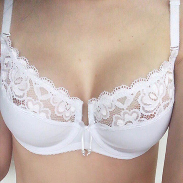
Виделись с Максимом Анваровичем только на операции, и на следущий день на перевязке.
Всё показал, рассказал, в этот же день я уехала домой.
Были вопросы - писала на ватсап, соблюдала всё, что говорил, единственное, попросила снять компру и помыться на день вперёд, уже просто не могла!
Сиси ровные, естественно красивые.
Так что, девочки, самое главное -первый месяц, и потом рекомендации по поводу дальнейших действий!
И будет вам счастье. 9 числа нам 3 месяца.
Всё натурально, естественно, как у девочки - была мальчиком. На фото 375 мл, импланты мотива, модели эргономикс. Восстановили объём и форму груди, после кормления двоих детей.
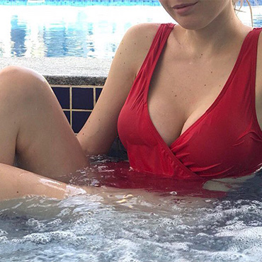
Максим Анварович, огромное вам спасибо.
Вы подарили мне не просто шикарную грудь, вы подарили мне уверенность в себе. Раньше выбор купальника - это расстроенные чувства, от того что ничего нормально не сидит, там висит, тут торчит, надо чтоб всё скрывало...
А сейчас радость, от того, что всё что предлагают - мало, на мою аппетитную грудь.
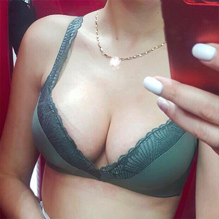
“В общем, я счастлива! Я рада, что обстоятельства сложились так, что я сделала сиси. Персоналом довольна, от М.А в восторге. Максим Анварович, я Вам очень благодарна. Прошел пока только месяц и я еще толком не осознаю, что они у меня есть. Но я их чувствую))) чувствую что они трутся об руки я выкинула все пуш апы, купила пока 2 топа.
Одежда у меня вся без вырезов, но ничего, я чую, что все впереди. Я хочу Вам пожелать здоровья, терпения, сил и побольше пациентов, довольных как я и многие девочки тут. А девочкам, которые только решаются, идите, не бойтесь! Главное очень хотеть и все получится!”
На фото круглые модели имплантов, мотива, объём 450 мл.
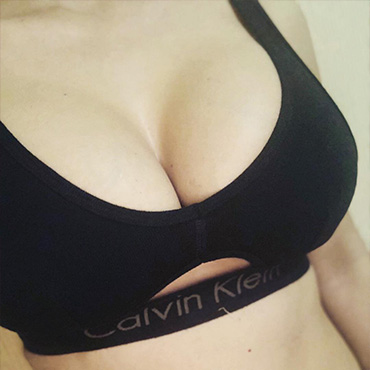
Давно так хотела написать девочкам, которые не решаются! или хотят ))) но не позволяют себе. У меня были деньги, и была возможность потратить на себя ))
Но ни шуба ни бриллианты не принесут такого кайфа
Как деньги, вложенные в себя. Спасибо огромное МА за кайф лицезреть себя) после рождения 3-х детей
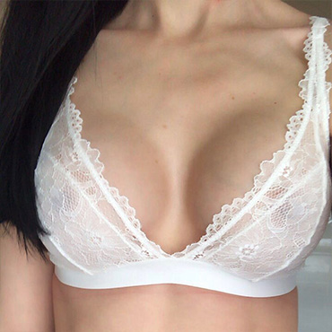
Вот моя история: закончила ГВ за 2 месяца до ОП, вид плачевный, писала всем топовым хирургам, все меня отшили (ждать не меньше 6 месяцев), о МА узнала в инсте, была реклама, зашла в профиль, просмотрела все видео ответы, у меня даже вопросов не осталось! Я написала МА, в своём тексте действительно вылила всю душу, когда мне написали прислать фото груди, а потом написали можно, я честно не поверила глазам! Мне задали вопрос «ваши предпочтения», я только написала чтоб было естественно и все, остальное на ваше усмотрение! Через 10 дней уже была оп. Я вам больше скажу, свой первый вопрос я задала на перевязке, (МА а можно посмотреть как выглядит, то что у меня внутри), я это для чего, вот так нужно доверять врачу и слава Богу у меня все хорошо, красиво, мои швы просто идеальные. МА вы крутейший врач, человек, наверно я даже словами не смогу вам выразить всю свою благодарность! Ну когда я смотрю на свою грудь, я всегда благодарю вас! Большое человеческое спасибо вам!
На фото объём 375 мл, импланты мотива, модели эргономикс.
Максим Анварович, сделал довольными нас двоих! Я тащусь! Муж тащится! И мы СЧАСТЛИВЫ! Сиськи правят миром. Не слушайте своих мужиков, когда они вам с -1ым говорят: «я тебя и такую люблю»... фигня это все! Глазища у них горят, когда сиськи есть, а не тогда, когда ты на мальчика похожа! Спасибо МА!
Когда я пришла домой в топе, и стоя показала ему, он Афигел, ну примерно так же, как я у МА, когда впервые их увидела) Я даже ниче сказать не могла... кроме Огооо!
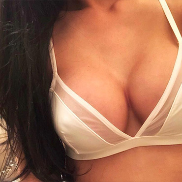
А вот и мои малыхи, 315мл) сегодня компру сняли, эргономикс у меня.
Я в шоке немножко, и до сих пор не верю, не нарадуюсь прям. Спасибо Максиму Анваровичу! сказать что я в восторге-это ничего не сказать)) лучше просто быть не могло, результат превзошел мои ожидания, так рада что попала именно к нему !! Только месяц прошел, отек ещё есть. И они еще не мягкие, но я довольная как... Межгрудка у меня сразу так близко, грудная клетка узенькая) лиф Oysho девочки) спорт.топ только на ночь, а днем в лифе без косточек

«Девочки, сегодня сняли швы и компру. Радости нет предела, хожу целый день, улыбку собрать не могу. Максим Анварович спасибо за красоту, профессионализм, за счастье, которое вы дарите нам. Живите долго, счастливо и будьте всегда здоровы. Сказать, что мне нравится ничего не сказать, я в восторге!
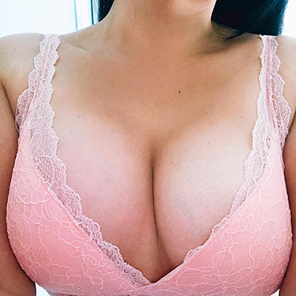
Прошло 3 месяца после операции, и с того дня не было ни дня, когда я бы не полюбовалась в зеркале, на ощупь, сверху, сбоку, лежа, по-всякому) своему виду, шикарное чувство самоудовлетворения! Как сейчас помню Ваши слова: «Даа… ситуация не из простых»))) Но была мечта эту непростую ситуацию исправить! За месяц была определена дата операции и несмотря на все возможные риски (которые могли бы быть у меня=) я была самая довольная, что этот день настанет! Не зря говорят, что если этому суждено случиться, и тебе это надо, все силы будут помогать тебе, найдутся деньги, прекрасный доктор, все сложится легко! Отдельное спасибо Вашей команде, улыбка творит чудеса) сразу после операции тебя окутывают вниманием, заботой! Ровно 4 дня было некомфортно, но это настолько забывается)главное поменять настрой, а потом можно даже полюбить, подружиться с компрессионным бельем). Также, не забудется день снятия швов и когда можно встать, и посмотреть… шла на консультацию, а тут опа: «Можно встать и посмотреть!» и такое волнение)) долго любовалась в Вашем кабинете, не описать словами!!! Счастье-счастье!!! Максим Анварович, спасибо Вам, спасибо от души, что Вы такой позитивный, что у Вас легкая энергетика, спасибо, что когда-то давно Вы приняли решение прийти в пластическую хирургию)
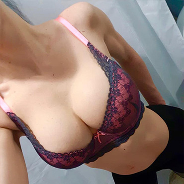
Максим Анварович, вы не только мою жизнь изменили, но и жизнь моего мужа тоже. P.s. уверенность в себе прямопропорциональна размеру груди, как не крути!!! Однозначно мужчину красит рядом с ним красивая уверенная в себе женщина!!!!! Выражаю вам огромную благодарность, а девочкам советую на 100% прислушиваться к мнению МА относительно размера!!
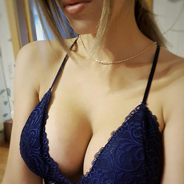
Здравствуйте, Максим Анварович. Все никак не могу попасть на консультацию, то работа, то отпуск, заботы 😁
22 августа уже будет 3 месяца! А я до сих пор не нашла слов как выразить свою благодарность Вам! Вы настоящий волшебник! Раз - и ты не просто пышногрудая красавица, а самый счастливый и уверенный в себе человек! Спасибо Вам огромное за Все! Я очень рада, что пришла именно к Вам! Вы профессионал своего дела! Высылаю Вам фото отчёт! Все отлично сейчас, форма стала идеальной, и размер то что надо! Спасибо, что настояли на 550 - это то что надо!
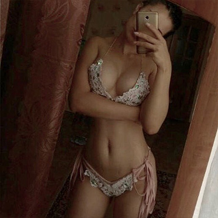
Максим Анварович, спасибо вам огромное!!! НИ капли не пожалела, что пришла именно к вам. Очень благодарна что вы настояли именно на этом размере, сейчас я понимаю что для меня это идеал, не больше и не меньше! Очень жалею, что раньше не сделала, и даже уже не представляю, как с той грудью жила раньше. Самооценка и внимание на высоте! Уже ровно пол года моей красоте, все отлично, спасибо вам!